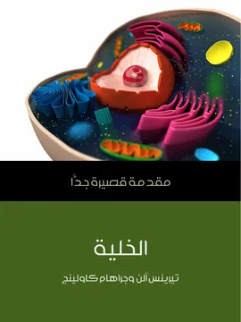

الخلية: مقدمة قصيرة جدًّا

قراءة عربية أصلية محددة النطاق في الصفحات 15 إلى 20 من ملف PDF المرتبط، وليست تلخيصا كاملا للكتاب. نناقش ما تدعمه هذه المقاطع فقط.
الخلية: أربعة مليارات عام من الانتخاب الطبيعي
يشرح الكتاب طبيعة الخلايا بأنها استغرقت نحو أربعة مليارات عام لتنظيم أنشطتها مدفوعة بضغوط الانتخاب الطبيعي: فالخلية التي تتكيف مع بيئتها وتتغذى وتتكاثر تبقى، والعاجزة يعني عجزها موتها، وقد أسفرت هذه العملية عن نظام إصلاح ذاتي التكاثر وذاتي الاكتفاء يعمل بكفاءة نادرًا ما يقترب منها نظام بشري، حتى إن تكنولوجيا النانو تهدف في أغلبها إلى استنساخ التفاعلات الجزيئية بمعدلات الكفاءة الموجودة في الخلايا الحية. وينتقل المؤلفان إلى «الأنسجة والتمايز»: الخاصية الأساسية لحقيقيات النواة قدرتها على تغيير شكلها ومكوناتها وأيضها لأداء مهمة معينة، ويتكون جسم الإنسان من نحو مئتي نوع من الخلايا تشكل الأنسجة الأربعة الأساسية: الطلائي والضام والعضلي والعصبي، وتُنتج الخلايا بمعدلات متفاوتة من ألف حيوان منوي في نبضة قلب إلى خلية عصبية تعيش عمرًا كاملًا، وتعيش بعض خلايا الدم ثماني ساعات بينما تعيش كرات الدم الحمراء نحو ١٢٠ يومًا، ومثال التمايز الخلايا القرنية المكونة في الغالب من الكيراتين.
زاوية وحدود القراءة
قراءة موجزة من ص ١٥ إلى ص ٢٠ من أصل ١٣٢ صفحة، تعرض مطالع الفصل الأول عن طبيعة الخلايا والأنسجة، لا الكتاب كاملًا.
الطبعة والقراءة
هذه الترجمة العربية صادرة ومتاحة مجانًا بموجب اتفاق قانوني بين مؤسسة هنداوي ودار نشر جامعة أكسفورد. حقوق الترجمة محفوظة لمؤسسة هنداوي.
تنزيل PDF المجاني ↓ القراءة والمصدر الرسمي ↗